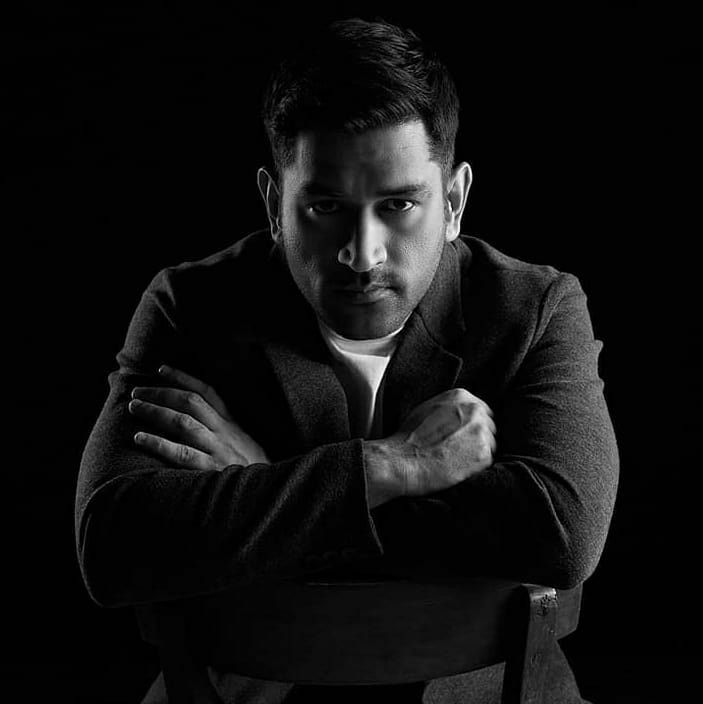

From ticket collector to trophy collector
Mahendra Singh Dhoni commonly known as MS Dhoni, is a former Indian cricketer and captain of the Indian national team in limited-overs formats from 2007 to 2017, and in Test cricket from 2008 to 2014. He is also the current captain of Chennai Super Kings in the Indian Premier League. Under his captaincy, India won the 2007 ICC World Twenty20, the 2011 Cricket World Cup, and the 2013 ICC Champions Trophy, the most by any captain. He also led India to victory in the 2010 and 2016 Asia Cup. Additionally, under his leadership, India won the 2010 and 2011 ICC Test Mace and 2013 ICC ODI Championship. Dhoni is a right-handed wicket-keeper batsman known for his calm captaincy and his ability to finish matches in tight situations. He scored over 10,000 runs in One Day Internationals and is considered one of the best finishers in the game. He is also one of the greatest wicket-keepers and captains in the history of cricket.
Dhoni was born on 7 July 1981 in Ranchi, Jharkhand to Pan Singh and Devaki Devi. He has a sister Jayanti and a brother Narendra Singh Dhoni. Originally his family belonged to Almora district of Uttarakhand. He had studied at the DAV Jawahar Vidya Mandir School in Ranchi, Jharkhand. Initially, during his school days, he used to play badminton and football and in fact was the goalkeeper of his football team. Once, he was sent by his football coach to play cricket for a local cricket club. It was in this match that he impressed everyone with his wicket-keeping skills which resulted in getting him a regular post of the wicketkeeper at the Commando Cricket Club. From 2001 to 2003, he worked as a Train Ticket Examiner (TTE) at the Kharagpur Railway Station under South Eastern Railway in Midnapore (W).
Dhoni began his career in 1998 by playing for Bihar U-19 team. He also played for East Zone U-19 team. In 1999-2000, he made a debut for Bihar in Ranji Trophy. His brilliant performances in the Deodhar Trophy, Duleep Trophy and India 'A' tour of Kenya, brought him to the notice of the national team selectors. He was then selected to play for the Indian Cricket team in 2004, where he made his ODI debut against Bangladesh in Chittagong. Since then, Mahendra Singh Dhoni has come a long way in cricket. His sterling performances with the bat have rescued India from many a tight positions. In his illustrious career, Dhoni has played 90 Tests scoring 4876 runs with his highest being 224 against Australia at Chennai in 2013. His amazing statistics behind the stumps include 256 catches and 38 stumpings. In the ODI scenario, Dhoni has so far played 265 matches scoring 8620 runs, with his highest being a staggering 183 not-out against Sri Lanka, in Jaipur, 2005-06. His ODI wicket-keeping statistics include 246 catches and 85 stumpings. Dhoni made his ICC Cricket World Cup debut in 2007 and played only three matches due to India's early exit. India won the 2007 ICC World Twenty20 and 2011 ICC Cricket World Cup, among others, under his captainship. He is also the captain of the Chennai Super Kings Team in the Indian Premier League (IPL). Under his captaincy, the team has won two IPL titles and also the Champions League Twenty20 in 2010.
MS Dhoni is India's only two-time World Cup winning captain, leading the team to victory on two occasions which involved two different format. He led a young Indian team to the first ever T20 World Cup victory in South Africa in 2007. Dhoni then led India to their second ODI World Cup victory in 2011. He was also awarded man of the match in the finals against Sri Lanka for his score of 91 not out. The bat which was used by Dhoni in the final match was auctioned for a whopping ₹ 72 Lac. The entire sum of money went to Sakshi Rawat Foundation which was operated by Dhoni's wife Sakshi Rawat to help orphan children.
"Dhoni is the best captain I have played under."
"I am really lucky to play under the leadership of MSD."
"Dhoni is the greatest captain of our country. His record is proof of that."
"The coolest man in world cricket, MS Dhoni delivers when it most matters."
I would go to war with Dhoni by my side.
"When I die, the last thing I want to see is the six that Dhoni hit in the 2011 World Cup final"
"Dhoni is my Hero. We talk a lot about Sachin Tendulkar & Virendar Sehwag, But this boy has as much as talent as anyone on the game"
"I pray that a tennis player should emerge from ranchi as MS Dhoni emerge for cricket."
"If 15 runs are needed off the last 6 balls, pressure is on the bowler and not on MS Dhoni."
"He has evolved as a leader, not just as a cricketer. In my opinion, if you see his records, he is definitely the best captain India ever had"
“If i am supposed to select a team sachin will be the opener and Dhoni will be the captain”
"If you want to learn batting, bat with MS Dhoni."
"MS Dhoni still the best bet as Test, ODI captain. No calmer finisher than Dhoni"